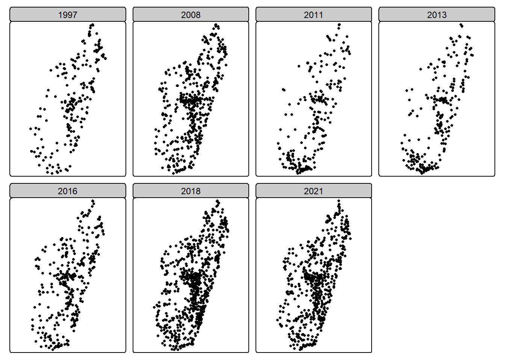
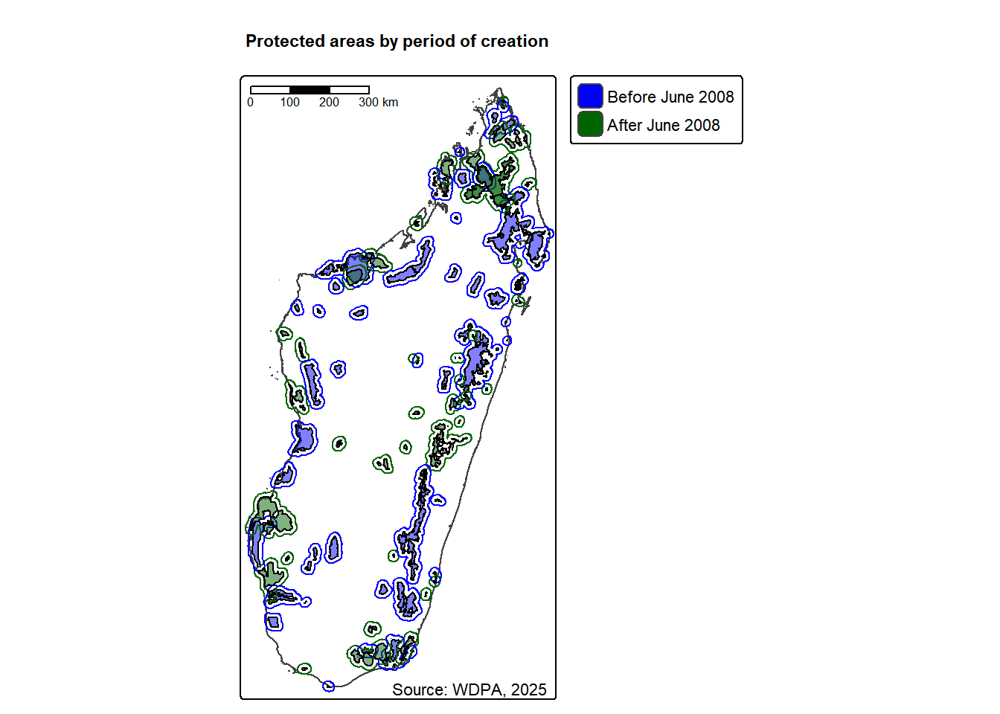

Les clusters d’enquêtes DHS (1997, 2008 et 2021), MIS (2011, 2013, 2016) et MICS (2018) sont classés par rapport à leur distance aux aires protégées (AP) et à leur localisation en zone rurale ou urbaine. Le résultat attendu est le suivant :
Groupe de traitement: Ménages localisées dans les clusters ruraux à moins de 10 km d’une AP de l’univers de traitement (créée à partir de 2008 pendant la période d’étude) — appartenance au groupe, y compris avant l’entrée en vigueur de l’AP
Groupe de contrôle: Ménages localisées dans les clusters ruraux à plus de 10 km des AP de l’univers de traitement
Groupe à exclure: Ménages localisées dans les clusters à moins de 10 km des AP créées avant 2008 et dans la zone urbaine
2.1 Chargement des coordonnées GPS des clusters d’enquête
On charge les coordonnées GPS des enquêtes de 1997, 2008, 2011, 2013, 2016, 2018 et 2021, qui sont en WGS 84 (codé EPSG : 4326). NToutefois, uniquement pour le calcul des surfaces ou des distances, on va utiliser le système de projection officiel de Madagascar, qui est le Laborde (EPSG : 29702).
Code
library(tidyverse) #Manipulation et visualisation des donnéeslibrary(haven) # Importer et exporter des données issues de Stata, SPSS ou SASlibrary(sf) #Analyse des données spatialeslibrary(tmap) #Analyse cartographiquelibrary(gt) #Mise en forme des tableaux library(gtExtras) # Extra styling des tableauxlibrary(geodata) # Pour avoir le contour de Madagascarlibrary(writexl) # Pour faire une sortie sous Excellibrary(units) # Unités de mesure pour les vecteurs Rlibrary(leaflet) # Pour faire une cartographie interactivelibrary(readxl) # Lecture des fichiers excellibrary(webshot2) # Pour faire des captures d'écran de tableaux gt library(dplyr)library(terra)library(tidyterra)library(progressr)#library(rstac)library(httr)library(wdpar)library(tmap)library(pbapply)# Systèmes de coordonnées de référence standard_crs <-4326mdg_crs <-29702# On charge les donnéesgps_1997_initial <-st_read("data/raw/dhs/DHS_1997/MDGE32FL/MDGE32FL.shp", quiet =TRUE)gps_2008_initial <-st_read("data/raw/dhs/DHS_2008/MDGE53FL/MDGE53FL.shp", quiet =TRUE) gps_2011_initial <-st_read("data/raw/dhs/DHS_2011/MDGE61FL/MDGE61FL.shp", quiet =TRUE) gps_2013_initial <-st_read("data/raw/dhs/DHS_2013/MDGE6AFL/MDGE6AFL.shp", quiet =TRUE) gps_2016_initial <-st_read("data/raw/dhs/DHS_2016/MDGE71FL/MDGE71FL.shp", quiet =TRUE)gps_2021_initial <-st_read("data/raw/dhs/DHS_2021/MDGE81FL/MDGE81FL.shp", quiet =TRUE)gps_2018_initial <-st_read("data/raw/mics/2018/GPS Datasets/MadagascarMICS2018GPS.shp") %>%select(DHSYEAR = SVYYEARS,DHSCLUST = HH1,URBAN_RURA = HH6,LATNUM = LATITUDE,LONGNUM = LONGITUDE) %>%mutate(URBAN_RURA =case_when( URBAN_RURA =="Urban"~"U", URBAN_RURA =="Rural"~"R",.default =NA_character_ ))
Reading layer `MadagascarMICS2018GPS' from data source
`C:\Users\fbede\Documents\Statistiques\PA-livelihood-impact-dhs_v2\data\raw\mics\2018\GPS Datasets\MadagascarMICS2018GPS.shp'
using driver `ESRI Shapefile'
Simple feature collection with 774 features and 18 fields
Geometry type: POINT
Dimension: XY
Bounding box: xmin: 43.36162 ymin: -25.52768 xmax: 50.27895 ymax: -12.28119
Geodetic CRS: WGS 84
Une fois les données chargées, on fusionne les trois jeux de données en un seul puis visualisés sur une carte.
Figure 1: DHS, MIS and MICS survey cluster locations
Nous obtenons une carte distincte pour chaque année d’enquête. Sur chaque carte figure des points, dans laquelle chaque point représente un cluster d’enquête, correspondant aux coordonnées GPS fournies par DHS.
2.2 Vérification des données gps des clusters
On vérifie que les coordonnées GPS sont bien dans le pays.
Code
# Contour national (GADM level 0), réutilisé dans tout le documentcontour_mada <- geodata::gadm(country ="Madagascar", level =0,path ="data/raw/gadm") |>st_as_sf()# Fonction qui vérifie que les coordonnées ne sont pas nullescheck_coordinates <-function(dhs_gps, country_polygon, negate =FALSE) { dhs_gps %>%filter(LONGNUM !=0| LATNUM !=0)}gps_1997 <-check_coordinates(gps_1997_initial, contour_mada)gps_2008 <-check_coordinates(gps_2008_initial, contour_mada)gps_2011 <-check_coordinates(gps_2011_initial, contour_mada)gps_2013 <-check_coordinates(gps_2013_initial, contour_mada)gps_2016 <-check_coordinates(gps_2016_initial, contour_mada)gps_2018 <-check_coordinates(gps_2018_initial, contour_mada)gps_2021 <-check_coordinates(gps_2021_initial, contour_mada)
Les coordonnées GPS de neuf clusters de l’enquête 2008 présentent des coordonnées GPS invalides (0,0). Un cluster de l’année 1997 et 2011 présente également des coordonnées GPS invalides.
Code
#| fig-cap: DHS, MIS and MICS survey cluster locations after correctiontmap_mode("plot")bind_rows(gps_1997, gps_2008, gps_2011, gps_2013, gps_2016, gps_2018, gps_2021) %>%tm_shape() +tm_dots() +tm_facets("DHSYEAR")

2.3 Une base actualisée des limites des aires protégées
La base dynamic_wdpa.gpkg est le produit consolidé du travail intitulé « Dynamic conservation boundaries » (Bédécarrats et al. 2026), dont le code source est archivé sur GitHub et les données publiées sur un dépôt de données scientifique. Elle répond à plusieurs limite structurelle du World Database on Protected Areas (WDPA), qui ne conserve que l’état actuel de chaque site : à chaque modification (redécoupage, reclassement, dégazage, protection temporaire), la configuration antérieure est écrasée, ce qui rend impossibles les analyses rétrospectives et biaise les évaluations d’impact qui assimilent les limites actuelles à celles en vigueur par le passé. En outre les chercheurs utilisent couramment le champ STATUS_YR comme la date de création des aires protégées, mais ce n’est pas toujours le cas, car cette date est réinitialisée à chaque changement de statut ou de dénomination d’une aire protégée. Pour remédier à ces faille, la base dynamic_wdpa.gpkg documente 123 aires protégées terrestres de Madagascar de 2000 à 2025 sous forme d’états temporels bornés dans le temps : chaque ligne représente une zone dans un état donné, avec sa période de validité (valid_from/valid_to), sa géométrie (WGS84), et ses attributs (WDPAID, nom, désignation, catégorie UICN, statut, autorité de gestion), chaque état étant rattaché à une source juridique (registre d’amendements YAML consolidé par un moteur déterministe en R). Les zones sont typées par le champ zone_type : external_boundary (limite externe de l’AP), core_zone (noyau dur où l’usage extractif est prohibé), internal_buffer_zone et external_buffer_zone (zones tampons internes et externes). C’est ce découpage temporel qui permet, dans ce chapitre, de classer chaque cluster d’enquête selon la configuration des AP en vigueur à sa date d’enquête (cf. section « Classification des clusters »), et de mener le test de sensibilité « limites fixes vs limites à date ».
2.3.1 États successifs du réseau d’AP malgache aux dates des enquêtes
Ces helpers reconstruisent l’état du réseau d’AP valide à une date donnée en filtrant les états temporels de dynamic_wdpa d’après valid_from/valid_to. Ils sont définis ici une seule fois et réutilisés par la classification des clusters (limites à date) et le test de sensibilité (limites fixes).
Code
# Chargement de la base dynamique (mêmes filtres que data/PA_creation/PA_database.R,# en conservant les champs temporels state_id / valid_from / valid_to)## Import via sf::st_read() : terra::vect() supprimait# silencieusement les géométries MULTIPOINT — 3 états external_boundary# perdus à la lecture (Sahamalaza-Iles Radama 900667, écarté ensuite par le# filtre marin, Littoral de Toliara 901250 et Mananara Nord 20017, tous deux# conservés dans le jeu d'analyse). st_read préserve tous les types de# géométrie ; l'assertion ci-dessous garantit qu'aucune entité de la source# n'est perdue à l'import, et les géométries invalides sont signalées# explicitement (elles sont corrigées en aval par st_make_valid()).sf_dynamic_wdpa <-st_read("data/PA_creation/dynamic_wdpa.gpkg", quiet =TRUE)# terra::vect() + st_as_sf() nommaient la colonne géométrie "geometry" ; on# conserve ce nom pour ne pas modifier le code en avalst_geometry(sf_dynamic_wdpa) <-"geometry"n_source <-sum(st_layers("data/PA_creation/dynamic_wdpa.gpkg")$features)stopifnot("Import dynamic_wdpa : des entités de la source ont été perdues"=nrow(sf_dynamic_wdpa) == n_source)# La réattribution PHP (cf. ci-dessous) ne concerne que les états Ramsar de# Mandrozo et Tsimembo-Manambolomaty dans la sourcephp_ids <-c(555547961L, 166880L)php_date <-as.Date("2015-04-21")stopifnot("Mandrozo/Tsimembo : états Ramsar inattendus dans la source"=sum(sf_dynamic_wdpa$WDPAID %in% php_ids & sf_dynamic_wdpa$DESIG =="Ramsar Site, Wetland of International Importance") ==4L)n_invalid_geom <-sum(!st_is_valid(sf_dynamic_wdpa))if (n_invalid_geom >0) {warning(sprintf("%d géométrie(s) invalide(s) dans la source (corrigée(s) en aval par st_make_valid())", n_invalid_geom))}table(st_geometry_type(sf_dynamic_wdpa))
dynamic_wdpa_vect <- sf_dynamic_wdpa |>filter(MARINE %in%0:1) |>mutate(STATUS_YR_DYN =case_when( WDPAID ==555697871~2015, STATUS =="Proposed"~2026,TRUE~as.integer(STATUS_YR) ),WDPAID =as.integer(WDPAID) ) |># Correction de source : Mandrozo (WDPAID 555547961) et le# Complexe Tsimembo-Manambolomaty (WDPAID 166880) ont reçu leur désignation# nationale définitive de Paysage Harmonieux Protégé (PHP, UICN V) le# 21 avril 2015 (décrets 2015-714 et 2015-715). La base dynamique conserve# leur état Ramsar après l'expiration de la protection temporaire : le# filtre générique ci-dessous, qui ne retire du réseau national que les# désignations purement internationales, les aurait donc supprimés après# cette date. On réattribue la désignation nationale PHP à ces deux AP —# correction de la source, le statut Ramsar lui-même n'étant pas traité# comme une protection nationale.mutate(DESIG =if_else( WDPAID %in%c(555547961L, 166880L) & DESIG =="Ramsar Site, Wetland of International Importance","Paysage Harmonieux Protégé", DESIG ) ) |>filter(DESIG !="Ramsar Site, Wetland of International Importance") |>filter(STATUS !="Inscribed") |>select(WDPAID, NAME, DESIG, MANG_AUTH, IUCN_CAT, STATUS, STATUS_YR_DYN, zone_type, state_id, valid_from, valid_to)# Vérification : Mandrozo et Tsimembo-Manambolomaty restent dans le# réseau national après le 21 avril 2015 sous désignation PHP (états# external_boundary et secondary_zoning), leurs états antérieurs restant# inchangés (protection temporaire).php_audit <-as.data.frame(dynamic_wdpa_vect)[, c("WDPAID", "NAME", "DESIG","zone_type", "state_id","valid_from", "valid_to")]php_audit$valid_from <-as.Date(php_audit$valid_from)php_audit$valid_to <-as.Date(php_audit$valid_to)stopifnot("Mandrozo/Tsimembo : absents du réseau national après le 21/04/2015"=sum(php_audit$WDPAID %in% php_ids & php_audit$valid_from <= php_date & (is.na(php_audit$valid_to) | php_audit$valid_to > php_date) & php_audit$DESIG =="Paysage Harmonieux Protégé") ==4L,"Mandrozo/Tsimembo : états antérieurs au 21/04/2015 modifiés"=all(php_audit$DESIG[php_audit$WDPAID %in% php_ids & php_audit$valid_from < php_date] =="Protection Temporaire"),"Mandrozo/Tsimembo : désignations inattendues"=all(php_audit$DESIG[php_audit$WDPAID %in% php_ids] %in%c("Protection Temporaire", "Paysage Harmonieux Protégé")))php_audit
survey_years <-c(1997, 2008, 2011, 2013, 2016, 2018, 2021)last_wave <-max(survey_years)# États des limites externes, avec les métadonnées par AP (jeu d'analyse,# hors AP "Proposed")pa_states_analysis <-st_as_sf(dynamic_wdpa_vect) |>mutate(valid_from =as.Date(valid_from), valid_to =as.Date(valid_to)) |># Correction robuste de WDPAID 555697871 (Ambohimirahavavy Marivorahona,# créé en 2015) : la base dynamique lui attribuait un valid_from# placeholder 0000-01-01. Si la base amont est corrigée, la condition# est fausse et ce correctif devient un no-op.mutate(valid_from =if_else(WDPAID ==555697871& valid_from <as.Date("2015-01-01"),as.Date("2015-01-01"), valid_from)) |>filter(zone_type =="external_boundary") |>st_make_valid() |>left_join(dynamic_wdpa_metadata |>select(-STATUS), by ="WDPAID") |>filter(is.na(STATUS) | STATUS !="Proposed") |>select(WDPAID, STATUS, STATUS_YR, IUCN_CAT = IUCN_CAT.y, valid_from, valid_to, geometry) |>arrange(WDPAID, valid_from)# Hypothèse des limites fixes (issue U2 #2) : dernier état de limite connu# par AP, appliqué rétroactivement à toutes les vagues. Utilisée uniquement# pour le test de sensibilité.pa_states_fixed <- pa_states_analysis |>group_by(WDPAID) |>slice_tail(n =1) |>ungroup()# Fonction générique (destinée à conservation-dynamic-madagascar) : réseau d'AP# en vigueur à une date de référence de `year`. La date de référence coupe# l'année en deux : les enquêtes DHS/MICS s'étalent sur plusieurs mois, le# 1er juin approche mieux la date moyenne d'interview que le 31 décembre,# qui post-date la collecte de presque toute l'année.#' Get the PA network in force at a reference date#'#' Filters consolidated PA states to those valid at the reference date of a#' given year: states whose validity started on or before the cut-off date and#' have not ended by then (open-ended states are always kept). The cut-off#' date is expressed as "DD/MM" (day/month) and defaults to "01/06"#' (June 1st), which better approximates the average DHS/MICS interview date#' than December 31st.#'#' @param states Consolidated PA states (output from consolidate_pa_states)#' @param year Reference year#' @param cutoff_date Cut-off date within the year, as "DD/MM" (default "01/06")#' @return sf object with the states valid at the reference dateget_pa_network <-function(states, year, cutoff_date ="01/06") { md <-as.integer(strsplit(cutoff_date, "/")[[1]]) ref_date <-as.Date(sprintf("%d-%02d-%02d", year, md[2], md[1])) states |>filter(valid_from <= ref_date, is.na(valid_to) | ref_date < valid_to)}# Date de référence des vagues : un seul point de définition, réutilisé# partout (classification, tests, estimation). Le 1er juin coupe l'année en# deux et approche la date moyenne d'interview DHS/MICS.survey_reference_date <-function(year) {as.Date(sprintf("%d-06-01", year))}# Premier état connu de chaque AP : année de création (STATUS_YR, réinitialisé# à chaque changement de statut, on retient l'état initial) et date de début# de traitement (= premier `valid_from`, corrigé le cas échéant, cf. 555697871).pa_first <- pa_states_analysis |>group_by(WDPAID) |>slice_min(valid_from, n =1, with_ties =FALSE) |>ungroup() |>st_drop_geometry() |>select(WDPAID, STATUS, STATUS_YR, treatment_date = valid_from) |>left_join(dynamic_wdpa_metadata |>select(WDPAID, NAME), by ="WDPAID") |>select(WDPAID, NAME, STATUS, STATUS_YR, treatment_date)# Univers de traitement : AP terrestres hors "Proposed" créées pendant la# période d'étude (2008 à la dernière vague). Définition substantielle# inchangée (PAP) ; seule la temporalité fine (date vs année) évolue.pa_universe_ids <- pa_first |>filter(STATUS_YR >=2008, STATUS_YR <= last_wave) |>pull(WDPAID)# AP antérieures à 2008 : exposition pré-baseline => Excluded (PAP)pa_pre_ids <- pa_first |>filter(STATUS_YR <2008) |>pull(WDPAID)# Limites effectives d'un ensemble d'AP à une date de référence :# - AP future à cette date (treatment_date > ref) : limite en vigueur à# l'entrée en traitement (premier état) ;# - AP déjà entrée en traitement : limite en vigueur à la date de référence ;# si aucun état ne couvre cette date (AP dissoute temporairement ou# définitivement), on retient le dernier état antérieur — repli documenté,# la définition du traitement du PAP reposant sur la création, non sur la# dissolution.pa_effective_states <-function(ids, ref_date, fixed =FALSE) {if (fixed) {# Test de sensibilité : dernier état de limite connu, appliqué tel quel.return(pa_states_fixed |>filter(WDPAID %in% ids)) } pa_states_analysis |>filter(WDPAID %in% ids) |>left_join(pa_first |>select(WDPAID, treatment_date), by ="WDPAID") |>filter(valid_from <=pmax(ref_date, treatment_date)) |>group_by(WDPAID) |>slice_max(valid_from, n =1, with_ties =FALSE) |>ungroup() |>select(-treatment_date)}# Couches d'AP d'une vague : pré-baseline (Excluded) et univers de traitement# (GROUP = Treatment), avec la distinction actif / futur à la date de référence.# Exception placebo : la vague 1997 utilise l'univers et les limites de 2008,# de sorte que sa sélection de clusters est identique à celle de 2008.pa_layers <-function(year, fixed =FALSE) { ref_year <-max(year, 2008) ref_date <-survey_reference_date(ref_year)if (fixed) { pre <- pa_states_fixed |>filter(WDPAID %in% pa_pre_ids) univ <- pa_states_fixed |>filter(WDPAID %in% pa_universe_ids) } else { net <-get_pa_network(pa_states_analysis, ref_year) pre <- net |>filter(WDPAID %in% pa_pre_ids) univ <-pa_effective_states(pa_universe_ids, ref_date) } univ <- univ |>left_join(pa_first |>select(WDPAID, treatment_date), by ="WDPAID") |>select(WDPAID, STATUS, STATUS_YR, IUCN_CAT, valid_from, valid_to, treatment_date, geometry)list(pre = pre,univ = univ,univ_active = univ |>filter(treatment_date <= ref_date),univ_future = univ |>filter(treatment_date > ref_date) )}# Application aux vagues d'enquête : une couche du réseau par date, avec# la géométrie en vigueur au 1er juin de chaque année (y compris 1997,# qui reprend désormais son propre état et non plus celui de 2008).# Classification stricte (IUCN I-IV) vs multi-usage (IUCN V-VI) : définition# partagée avec 07-estimation_staggered.qmd (cf. utils/iucn_sets.R)source("utils/iucn_sets.R")dynamic_wdpa_vect_yearly <- purrr::map(survey_years, function(y) {get_pa_network(pa_states_analysis, y) |>mutate(pa_type =case_when( IUCN_CAT %in% iucn_sets$strict ~"Strict (IUCN I-IV)", IUCN_CAT %in% iucn_sets$multi ~"Multi-use (IUCN V-VI)",TRUE~"Autre" )) |>mutate(survey_year = y)}) |>bind_rows() |>mutate(survey_year =factor(survey_year, levels = survey_years))# Contour national (adm0) en arrière-plancontour_mada0 <- contour_mada# Vérification : les couches annuelles ne sont pas identiques (évolutions# de limites et entrées/sorties entre vagues successives)purrr::map_dfr(seq_along(survey_years)[-1], function(i) { a <- dynamic_wdpa_vect_yearly |>filter(survey_year == survey_years[i -1]) |>mutate(area_km2 =as.numeric(st_area(geometry)) /1e6) |>st_drop_geometry() |>select(WDPAID, area_a = area_km2) b <- dynamic_wdpa_vect_yearly |>filter(survey_year == survey_years[i]) |>mutate(area_km2 =as.numeric(st_area(geometry)) /1e6) |>st_drop_geometry() |>select(WDPAID, area_b = area_km2) m <-merge(a, b, by ="WDPAID", all =TRUE)tibble(vague = survey_years[i],n_AP =nrow(b),nouvelles =sum(is.na(m$area_a) &!is.na(m$area_b)),sorties =sum(!is.na(m$area_a) &is.na(m$area_b)),limites_modifiees =sum(abs(m$area_b - m$area_a) >0.01, na.rm =TRUE) )})
tab_pa <- dynamic_wdpa_vect_yearly |>mutate(area_km2 =as.numeric(st_area(geometry)) /1e6) |>st_drop_geometry() |># Trois catégories, y compris "Autre" (AP sans catégorie UICN assignée —# réserves de biosphère UNESCO-MAB, dont les géométries MULTIPOINT sont# désormais conservées : Littoral de Toliara, Mananara Nord)mutate(pa_type =factor(pa_type, levels =c("Strict (IUCN I-IV)","Multi-use (IUCN V-VI)","Autre"))) |>group_by(survey_year, pa_type) |>summarise(n =n(), area =sum(area_km2), .groups ="drop") |> tidyr::pivot_wider(names_from = pa_type, values_from =c(n, area),values_fill =0)names(tab_pa) <-c("survey_year", "n_strict", "n_multi", "n_autre","a_strict", "a_multi", "a_autre")tab_pa |>mutate(n_total = n_strict + n_multi + n_autre,a_total = a_strict + a_multi + a_autre) |>select(survey_year, n_strict, a_strict, n_multi, a_multi, n_autre, a_autre, n_total, a_total) |>gt() |>tab_header(title =md("**État du réseau d'aires protégées aux dates d'enquête**"),subtitle =md("*AP strictes (IUCN I-IV), multi-usages (IUCN V-VI) et autres — état au 1er juin de chaque année*") ) |>tab_spanner(label ="Strictes (IUCN I-IV)", columns =c(n_strict, a_strict)) |>tab_spanner(label ="Multi-usages (IUCN V-VI)", columns =c(n_multi, a_multi)) |>tab_spanner(label ="Autres", columns =c(n_autre, a_autre)) |>tab_spanner(label ="Total", columns =c(n_total, a_total)) |>cols_label(survey_year ="Vague",n_strict ="N",a_strict ="km²",n_multi ="N",a_multi ="km²",n_autre ="N",a_autre ="km²",n_total ="N",a_total ="km²" ) |>fmt_number(columns =c(a_strict, a_multi, a_autre, a_total), decimals =0) |>fmt_number(columns =c(n_strict, n_multi, n_autre, n_total), decimals =0,use_seps =FALSE) |>tab_footnote("Nombre d'AP et superficie du réseau valide au 1er juin de l'année d'enquête. Autres : AP sans catégorie UICN assignée (réserves de biosphère UNESCO-MAB).",locations =cells_column_labels(columns = survey_year) ) |>tab_options(table.width =pct(100))
Table 2.1
État du réseau d’aires protégées aux dates d’enquête
AP strictes (IUCN I-IV), multi-usages (IUCN V-VI) et autres — état au 1er juin de chaque année
Vague1
Strictes (IUCN I-IV)
Multi-usages (IUCN V-VI)
Autres
Total
N
km²
N
km²
N
km²
N
km²
1997
40
15,142
1
0
0
0
41
15,142
2008
49
24,989
2
0
15
15,794
66
40,782
2011
52
25,994
2
0
51
33,357
105
59,351
2013
52
26,005
2
0
51
33,357
105
59,362
2016
53
34,437
2
0
60
36,889
115
71,327
2018
54
35,540
2
0
62
36,987
118
72,527
2021
54
35,540
2
0
64
37,266
120
72,806
1 Nombre d'AP et superficie du réseau valide au 1er juin de l'année d'enquête. Autres : AP sans catégorie UICN assignée (réserves de biosphère UNESCO-MAB).
2.4 Création de buffer pour les AP avant et après 2008
On travaille toujours avec les portions terrestres des AP.
Pour analyser l’impact des AP selon leur période de création, on spécifie, pour chaque vague d’enquête, les AP antérieures à 2008 (en vigueur à la date de référence de la vague) et l’univers de traitement (AP créées à partir de 2008, limites effectives définies plus haut : limite de création pour les AP futures, limite en vigueur pour les AP actives). On applique ensuite un buffer zone de 10 km autour de chaque groupe d’AP. Chaque groupe a été reprojeté dans le système de projection officiel de Madagascar, qui est le Laborde (EPSG : 29702) pour les calculs de distances. Nous créons ensuite une carte pour visualiser les AP et leurs zones d’influence, en prenant la vague 2008 comme exemple. Exception : pour l’enquête 1997, utilisée comme test de placebo, on applique l’état du réseau d’AP de 2008 (et donc les buffers de 2008).
Code
# Buffer de 10 kmbuffer_dist <-10000# Fonction de création du buffer de 10 km (reprojection Laborde pour les# calculs de distance, union des AP, puis retour en WGS 84). Définie une# seule fois ici et réutilisée par la classification des clusters.buffer_10km <-function(pa, buffer_dist =10000) {if (nrow(pa) ==0) return(st_as_sf(st_sfc(st_polygon(), crs = standard_crs))) pa |>st_transform(mdg_crs) |>st_buffer(dist = buffer_dist) |>st_make_valid() |>st_union() |>st_as_sf() |>st_make_valid() |>st_transform(standard_crs)}# Exemple 2008 : couches et buffers utilisés pour les cartes ci-dessous.# À la date de référence de l'enquête 2008 (1er juin), aucune AP de l'univers# de traitement n'est encore en vigueur (créations oct.-déc. 2008) : la couche# "from_2008" montre leurs limites de création, qui délimitent la géographie# de traitement futur.pad_empty <-function(x) {if (nrow(x) ==0) {st_as_sf(st_sfc(st_polygon(), crs =st_crs(x))) } else x}lay_2008 <-pa_layers(2008)wdpa_before_2008 <- lay_2008$pre |>pad_empty()wdpa_from_2008 <- lay_2008$univ_future |>pad_empty()buffer_10km_before_2008 <-buffer_10km(lay_2008$pre)buffer_10km_from_2008 <-buffer_10km(lay_2008$univ)# Visualisation des cartes tmap_mode("plot")tm_shape(contour_mada) +tm_borders() +tm_shape(wdpa_before_2008) +tm_polygons(fill ="blue", col ="black", fill_alpha =0.5) +tm_shape(buffer_10km_from_2008) +tm_borders(col ="darkgreen", lwd =1, fill.legend =tm_legend_hide()) +tm_shape(buffer_10km_before_2008) +tm_borders(col ="blue", lwd =1, fill.legend =tm_legend_hide()) +tm_shape(wdpa_from_2008) +tm_polygons(fill ="darkgreen", col ="black", fill_alpha =0.5) +tm_add_legend(type ="polygons", fill =c("blue", "darkgreen"), labels =c("Before June 2008", "After June 2008")) +tm_title("Protected areas by period of creation", fontface ="bold", size =1) +tm_credits("Source: WDPA, 2025", position =c("BOTTOM", "RIGHT")) +tm_scalebar(position =c("TOP", "LEFT"))

Figure 5: Protected areas by period of creation
On agrège les données pour chaque groupe, en calculant le nombre total d’aires protégées et leur superficie totale, que l’on présente sous forme de tableau.
Code
library(gt)pivot_year <-2008# Année de création : premier STATUS_YR connu de chaque AP (le STATUS_YR est# réinitialisé à chaque changement de statut, on retient l'état initial).# Superficie : dernier état de limite connu (pa_states_fixed, hors AP# "Proposed"), base dynamic_wdpa.pa_crea <- pa_states_analysis |>group_by(WDPAID) |>slice_min(valid_from, n =1, with_ties =FALSE) |>ungroup() |>st_drop_geometry() |>select(WDPAID, STATUS_YR)pa_area <- pa_states_fixed |>mutate(area_km2 =as.numeric(st_area(geometry)) /1e6) |>st_drop_geometry() |>select(WDPAID, area_km2)summary_table <- pa_crea |>left_join(pa_area, by ="WDPAID") |>mutate(Creation_Period =if_else( STATUS_YR < pivot_year,paste("Before June", pivot_year),paste("After June", pivot_year) )) |>group_by(Creation_Period) |>summarise(Count =n(),Area_km2 =sum(area_km2, na.rm =TRUE),.groups ="drop" )gt_table <- summary_table |>gt() |>tab_header(title =md("**Protected Areas by Period of Creation**"),subtitle =md(paste0("*Madagascar — Reference year: ", pivot_year," — Terrestrial areas only*")) ) |>cols_label(Creation_Period =md("**Creation Period**"),Count =md("**PA Number**"),Area_km2 =md("**Area (km²)**") ) |>fmt_number(columns = Count, decimals =0, use_seps =TRUE) |>fmt_number(columns = Area_km2, decimals =2, use_seps =TRUE) |>cols_align(align ="left", columns = Creation_Period) |>cols_align(align ="right", columns =c(Count, Area_km2)) |>cols_width( Creation_Period ~px(180), Count ~px(120), Area_km2 ~px(150) ) |>tab_style(style =cell_fill(color ="#e8f5e9"),locations =cells_body(rows =seq(2, nrow(summary_table), 2)) ) |>tab_style(style =list(cell_fill(color ="darkgreen"),cell_text(color ="white", weight ="bold", size =px(13)) ),locations =cells_column_labels() ) |>tab_style(style =cell_text(size =px(18), weight ="bold", color ="darkgreen"),locations =cells_title(groups ="title") ) |>tab_style(style =cell_text(size =px(13), color ="grey40", style ="italic"),locations =cells_title(groups ="subtitle") ) |>grand_summary_rows(columns =c(Count, Area_km2),fns =list(Total =~sum(.)),fmt =~fmt_number(., decimals =0, use_seps =TRUE) ) |>tab_style(style =list(cell_fill(color ="darkgreen"),cell_text(color ="white", weight ="bold") ),locations =cells_grand_summary() ) |>tab_footnote(footnote =md("PA = Protected Area as defined by IUCN categories I–VI. Creation year: first STATUS_YR known per PA (dynamic WDPA base); area: latest known boundary."),locations =cells_column_labels(columns = Count) ) |>tab_source_note(md("**Source:** Dynamic conservation boundaries (WDPA-derived), 2025.")) |>tab_source_note(md("**Note:** Analysis restricted to terrestrial protected areas in Madagascar; AP « Proposed » excluded.")) |>tab_options(table.font.names ="Times New Roman",table.font.size =px(13),table.width =pct(85),heading.align ="left",heading.border.bottom.color ="darkgreen",heading.border.bottom.width =px(2),column_labels.border.top.color ="darkgreen",column_labels.border.top.width =px(2),column_labels.border.bottom.color ="darkgreen",column_labels.border.bottom.width =px(2),column_labels.padding =px(8),table_body.hlines.color ="#cccccc",table_body.hlines.width =px(0.5),table_body.border.bottom.color ="darkgreen",table_body.border.bottom.width =px(2),data_row.padding =px(8),source_notes.font.size =px(10),source_notes.border.lr.style ="none",source_notes.padding =px(6),footnotes.font.size =px(10),footnotes.marks ="letters" )write_rds(gt_table, "paper/tables/tbl-period-crea.rds")gtsave(gt_table, "paper/tables/tbl-period-crea.png", expand =10, zoom =3)gt_table
Table 2.2
Protected Areas by Period of Creation
Madagascar — Reference year: 2008 — Terrestrial areas only
Creation Period
PA Numbera
After June 2008
54
Before June 2008
64
NA
2
Total
—
120
a PA = Protected Area as defined by IUCN categories I–VI. Creation year: first STATUS_YR known per PA (dynamic WDPA base); area: latest known boundary.
Note: Analysis restricted to terrestrial protected areas in Madagascar; AP « Proposed » excluded.
Le tableau ci-dessus récapitule, sur l’ensemble de la période d’étude (1997–2021), le nombre et la superficie des AP selon leur période de création (les AP encore au statut “Proposed” en sont exclues).
2.5 Classification des clusters
Les grappes d’enquête sont classées selon leur proximité aux AP créées avant 2008 et à partir de 2008. A l’aide de la fonction classify_clusters_with_pa(), nous catégorisons chaque cluster en trois groupes : traitement, contrôle ou exclu, selon leur localisation par rapport aux AP et leur statut urbain ou rural. Cette classification est appliquée aux clusters de 1997, 2008, 2011, 2013, 2016, 2018 et 2021. Parmi les clusters considérés comme “traités”, on identifie la date de début de traitement de l’AP, son année de création, son type et le numéro WDPAID ou l’identifiant unique de l’AP en question. Les résultats obtenus sont fusionnés. Nous créons ensuite une carte par année d’étude pour visualiser la localisation des AP et la répartition spatiale des clusters selon leur groupe.
Sémantique des variables de classification. Deux concepts distincts sont explicitement séparés :
GROUP (Treatment / Control / Excluded) désigne l’appartenance à la géographie de traitement éventuelle pendant la période d’étude : un cluster rural à moins de 10 km d’une AP de l’univers de traitement (créée entre 2008 et 2021, hors “Proposed”) est Treatment, y compris dans les vagues antérieures à la date de création de l’AP. C’est cette variable qui définit le groupe de traitement dans le DiD en double différence (l’activation du traitement est représentée par l’interaction avec la période post).
treated_now indique si l’AP est effectivement en vigueur à la date de référence de la vague (1er juin) : un cluster Treatment observé avant sa date de début de traitement a treated_now = 0, après cette date treated_now = 1.
treatment_date est la date de début de traitement de l’AP assignée (premier valid_from de la base dynamique, qui coïncide avec l’année STATUS_YR pour toutes les AP de l’univers, à l’exception correctif documenté du WDPAID 555697871) ; treatment_year reprend l’année de création STATUS_YR (définition substantielle inchangée).
Ce choix suit le plan de pré-analyse : le groupe de traitement du placebo 1997 est défini par la proximité des AP créées pendant la période de traitement ultérieure (2008–2021). On ne requalifie donc pas en Control une localisation traitée à terme au seul motif que l’AP n’existe pas encore à la date de l’enquête. En particulier, une AP créée tardivement dans l’année d’une vague (p. ex. oct.–déc. 2008, après le 1er juin) reste Treatment avec treated_now = 0 à la baseline 2008 — la comparaison STATUS_YR > année, qui perdait ces cas, est abandonnée au profit des dates.
Les limites des AP ayant évolué au cours du temps (le fichier dynamic_wdpa.gpkg documente chaque état des limites avec ses périodes de validité valid_from/valid_to), la classification est faite par vague d’enquête : pour chaque année, on utilise l’état du réseau d’AP valide à la date de référence (1er juin — la collecte s’étalant sur plusieurs mois, cette date coupe l’année en deux et approche la date moyenne d’interview), et non les limites actuelles. Pour une AP encore future à cette date, c’est la limite en vigueur à son entrée en traitement qui sert à identifier les clusters qui seront traités. La vague 1997 fait exception : elle sert de vague placebo (comparaison 1997–2008), on lui applique donc l’univers et les limites de 2008, de sorte qu’elle est construite avec le même univers de traitement et les mêmes règles de classification que la baseline 2008 (toutes les unités y sont pré-traitement : treated_now = 0). Il ne s’agit pas des mêmes unités échantillonnées : les vagues DHS/MIS sont des coupes répétées indépendantes et les identifiants de grappes ne sont pas des identifiants longitudinaux.
Les AP encore au statut “Proposed” (jamais officialisées pendant la période d’étude) sont exclues du jeu d’analyse : les clusters proches de ces AP sont classés Control, conformément au pré-analyse plan (aucune restriction n’existait pendant les enquêtes). Les clusters exposés à une AP antérieure à 2008 restent Excluded, y compris lorsque la zone chevauche celle d’une AP post-2008 (PAP : la date de création la plus ancienne l’emporte).
Code
# Helpers réutilisables définis plus haut : pa_states_analysis, pa_states_fixed,# survey_reference_date(), pa_first, pa_universe_ids, pa_pre_ids,# pa_effective_states(), pa_layers(), buffer_10km() — état du réseau d'AP et# limites effectives à une date donnée.pa_buffered <-function(pa, buffer_dist =10000) { pa |>select(WDPAID, STATUS_YR, IUCN_CAT, treatment_date, geometry) |>mutate(pa_geom = geometry) |>st_transform(mdg_crs) |>mutate(geometry =st_buffer(geometry, buffer_dist)) |>st_transform(standard_crs)}classify_clusters_with_pa <-function(cluster_gps, year, fixed =FALSE,buffer_dist =10000) {# Couches effectives de la vague (1997 placebo -> univers et limites de 2008) lay <-pa_layers(year, fixed) ref_wave <-survey_reference_date(year) buf_pre <-buffer_10km(lay$pre, buffer_dist) buf_univ <-buffer_10km(lay$univ, buffer_dist) in_pre <-st_within(cluster_gps, buf_pre, sparse =FALSE)[, 1] in_univ <-st_within(cluster_gps, buf_univ, sparse =FALSE)[, 1]# GROUP = appartenance à la géographie de traitement éventuelle (pas# l'activation à la date d'enquête) ; les clusters exposés à une AP# antérieure à 2008 sont exclus, y compris en cas de chevauchement. base <- cluster_gps |>mutate(GROUP =case_when( URBAN_RURA =="U"~"Excluded", in_pre ~"Excluded", URBAN_RURA =="R"& in_univ ~"Treatment",TRUE~"Control" ))# enrich treated with the earliest-treated + nearest PA treated_pts <- base |>filter(GROUP =="Treatment")if (nrow(treated_pts) ==0) {return(base |>mutate(WDPAID =NA_integer_, STATUS_YR =NA_integer_,IUCN_CAT =NA_character_, treatment_date =as.Date(NA),dist_km =NA_real_)) } cand_pa <-pa_buffered(lay$univ, buffer_dist) cand <-st_join(treated_pts, cand_pa, join = st_within, left =FALSE) |>mutate(dist_km =as.numeric(st_distance(geometry, pa_geom, by_element =TRUE)) /1000) best <- cand |>st_drop_geometry() |>group_by(DHSYEAR, DHSCLUST) |>slice_min(treatment_date, with_ties =TRUE) |>slice_min(dist_km, with_ties =FALSE) |>ungroup() |>select(DHSYEAR, DHSCLUST, WDPAID, STATUS_YR, IUCN_CAT, treatment_date, dist_km) base |>left_join(best, by =c("DHSYEAR", "DHSCLUST")) |>mutate(treated_now =as.integer(!is.na(treatment_date) & ref_wave >= treatment_date))}gps_all_class <-bind_rows( purrr::map(survey_years, function(y) {classify_clusters_with_pa(get(paste0("gps_", y)), y) }))
2.5.1 Tests : invariants de la classification
Code
# WDPAIDs des AP "Proposed" (exclues du jeu d'analyse)prop_ids <- dynamic_wdpa_metadata |>filter(STATUS =="Proposed") |>pull(WDPAID)# T9 : l'univers de traitement du placebo 1997 est identique à celui de la# baseline 2008 (mêmes AP, mêmes limites effectives)l97 <-pa_layers(1997)l08 <-pa_layers(2008)t9_universe_same <- (setequal(l97$univ$WDPAID, l08$univ$WDPAID) &&setequal(l97$pre$WDPAID, l08$pre$WDPAID) &&abs(sum(as.numeric(st_area(l97$univ))) -sum(as.numeric(st_area(l08$univ)))) <1&&abs(sum(as.numeric(st_area(l97$pre))) -sum(as.numeric(st_area(l08$pre)))) <1)test_results <- purrr::map_dfr(survey_years, function(y) { d_y <- gps_all_class |>filter(DHSYEAR == y) d_attr <- d_y |>st_drop_geometry() lay <-pa_layers(y) ref_wave <-survey_reference_date(y) rural <- d_attr$URBAN_RURA =="R" urban <- d_attr$URBAN_RURA =="U" buf_pre <-buffer_10km(lay$pre) buf_univ <-buffer_10km(lay$univ) in_pre <-st_within(d_y, buf_pre, sparse =FALSE)[, 1] in_univ <-st_within(d_y, buf_univ, sparse =FALSE)[, 1]# T8 : AP de l'univers créées l'année de la vague, après la date de référence late_ids <- pa_first |>filter(WDPAID %in% pa_universe_ids, treatment_date > ref_wave, treatment_date <=as.Date(sprintf("%d-12-31", y))) |>pull(WDPAID) in_late <-if (length(late_ids)) {st_within(d_y, buffer_10km(lay$univ |>filter(WDPAID %in% late_ids)),sparse =FALSE)[, 1] } elserep(FALSE, nrow(d_y))tibble(DHSYEAR = y,n_clusters =nrow(d_attr),# T1 : les AP "Proposed" ne génèrent jamais de traitementt1_treated_proposed =sum(d_attr$GROUP =="Treatment"& d_attr$WDPAID %in% prop_ids),# T2 : tout cluster Treatment a une AP et une date de traitement renseignéest2_treated_missing_info =sum(d_attr$GROUP =="Treatment"& (is.na(d_attr$WDPAID) |is.na(d_attr$treatment_date))),# T3 : aucun Control ne reçoit de date de traitementt3_control_with_treat_date =sum(d_attr$GROUP =="Control"&!is.na(d_attr$treatment_date)),# T4 : tout cluster urbain est Excludedt4_urban_not_excluded =sum(urban & d_attr$GROUP !="Excluded"),# T5 : tout cluster exposé à une AP pré-baseline est Excludedt5_pre_pa_not_excluded =sum(in_pre & d_attr$GROUP !="Excluded"),# T6 : Treatment avant sa date de traitement => treated_now = 0t6_pre_activation =sum(d_attr$GROUP =="Treatment"& d_attr$treatment_date > ref_wave & d_attr$treated_now !=0),# T7 : Treatment après sa date de traitement => treated_now = 1t7_post_activation =sum(d_attr$GROUP =="Treatment"& d_attr$treatment_date <= ref_wave & d_attr$treated_now !=1),# T8 : pas de perte des traitements futurs de l'année même (fin du# critère STATUS_YR > year)t8_sameyear_lost =sum(rural & in_late &!in_pre & d_attr$GROUP !="Treatment") )})# Tous les compteurs de violation doivent être nulsstopifnot("T1-T8 : la classification viole les invariants de traitement"=all(unlist(test_results |>select(matches("^t[0-9]_")))) ==0,"T9 : l'univers de traitement 1997 (placebo) diffère de celui de 2008"= t9_universe_same)test_results
Tous les tests passent pour les sept vagues : aucune AP “Proposed” ne génère de traitement (T1), tout cluster Treatment est rattaché à une AP et à une date de début de traitement (T2), aucun Control ne porte de date de traitement (T3), tout cluster urbain est Excluded (T4), tout cluster exposé à une AP pré-baseline est Excluded (T5), treated_now est cohérent avec la date de traitement (T6, T7), et aucune localisation à moins de 10 km d’une AP créée l’année même de la vague (après le 1er juin) n’est perdue — ces clusters sont Treatment avec treated_now = 0 (T8). L’univers de traitement du placebo 1997 est identique à celui de la baseline 2008 (T9).
2.5.3 Test de sensibilité : limites fixes vs limites à date
La classification principale repose sur les limites en vigueur à chaque date d’enquête. À titre de sensibilité, on compare avec la classification utilisant les limites fixes (dernier état connu de chaque AP, appliqué rétroactivement à toutes les vagues) :
Nous produisons un tableau récapitulatif du nombre de grappes d’enquête classées dans chaque groupe pour les années 1997, 2008, 2011, 2013, 2016, 2018 et 2021. Afin de faciliter le comptage et la transformation en tableau, nous supprimons les données spatiales pour ne conserver que les informations attributaires (année d’enquête “DHSYEAR” et groupe de classification “groupe”).
Code
# Sous-catégories pour le groupe "Traitement" (activation effective à la date# de référence de la vague : treated_now)treated_sub_clusters <- gps_all_class %>%st_drop_geometry() %>%filter(GROUP =="Treatment") %>%mutate(subcat =case_when( treated_now ==0~"Before treatment", treated_now ==1~"Already treated",TRUE~NA_character_ )) %>%count(DHSYEAR, subcat, name ="n_clusters") %>%pivot_wider(names_from = subcat, values_from = n_clusters, values_fill =0)# Ligne "Ensemble" (tous les traités, quel que soit le statut)treated_all_clusters <- gps_all_class %>%st_drop_geometry() %>%filter(GROUP =="Treatment") %>%count(DHSYEAR, name ="All_clusters")# Colonnes Contrôles / Exclusctrl_excl_clusters <- gps_all_class %>%st_drop_geometry() %>%filter(GROUP %in%c("Control", "Excluded")) %>%mutate(Groupe =recode(GROUP, Control ="Controls",Excluded ="Excluded")) %>%count(DHSYEAR, Groupe, name ="n") %>%pivot_wider(names_from = Groupe, values_from = n, values_fill =0)# Assemblage large (années en lignes)tab_wide_clusters <-list(treated_sub_clusters, treated_all_clusters, ctrl_excl_clusters) %>%Reduce(function(x, y) full_join(x, y, by ="DHSYEAR"), .) %>%arrange(DHSYEAR) %>%mutate(across(-DHSYEAR, ~replace_na(.x, 0L)))# Tableau gt : spanner "Traitement" + colonnes Contrôles / Exclusgt_table_clusters <- tab_wide_clusters %>%rename(Year = DHSYEAR) %>%gt() %>%tab_header(title ="Number of Clusters by Survey Year and Group") %>%cols_label(`Before treatment`="Before treatment",`Already treated`="Already treated",All_clusters ="All clusters",`Controls`="Controls",`Excluded`="Excluded" ) %>%tab_spanner(label ="Treatment",columns =c(`Before treatment`, `Already treated`, All_clusters) ) %>%fmt_number(columns =c(`Before treatment`, `Already treated`, All_clusters, `Controls`, `Excluded`),decimals =0,use_seps =TRUE ) %>%cols_align(align ="center", columns =everything()) %>%tab_footnote(footnote =md("**Before treatment** : the PA is not yet in force at the survey reference date (treated_now = 0). **Already treated** : the PA is in force at the survey reference date (treated_now = 1). **All clusters** : total number of clusters*Treatment*. GROUP identifies eventual treatment group membership, irrespective of current PA activation."),locations =cells_title(groups ="title") )gt_table_clusters
Number of Clusters by Survey Year and Group1
Year
Treatment
Controls
Excluded
Before treatment
Already treated
All clusters
1997
11
0
11
109
148
2008
38
0
38
323
224
2011
1
14
15
152
99
2013
1
22
23
143
108
2016
0
20
20
228
110
2018
1
45
46
413
315
2021
0
52
52
338
260
1Before treatment : the PA is not yet in force at the survey reference date (treated_now = 0). Already treated : the PA is in force at the survey reference date (treated_now = 1). All clusters : total number of clustersTreatment. GROUP identifies eventual treatment group membership, irrespective of current PA activation.
Maintenant avec le nombre de ménages :
Code
# Function to read DHS data for the specified year and identifierload_dhs_data <-function(dhs_folder, year, identifier) { folder_pattern <-paste0(".*", year, ".*", identifier) matching_folder <-list.dirs(dhs_folder, full.names =TRUE, recursive =TRUE) %>%keep(~str_detect(.x, folder_pattern))if (length(matching_folder) ==0) {stop("No folder found for the specified year and identifier.") }if (identifier =="GE") { file_pattern <-"\\.shp$" data_loader <-function(file) st_read(file, quiet =TRUE) } else { file_pattern <-"\\.[Dd][Tt][Aa]$" data_loader <- read_dta } target_file <-list.files(matching_folder, pattern = file_pattern, full.names =TRUE)if (length(target_file) ==0) {stop("No valid file found in the folder.") } data <-data_loader(target_file)return(data)}dhs_folder <-"data/raw/dhs"# Années disponiblesyears_all <-sort(unique(gps_all_class$DHSYEAR))# Compte ménages (toutes observations) households_counts_all <-map_dfr(years_all, function(y) {# Load data depending on yearif (y ==2018) { hr <-read_spss("data/raw/mics/2018/SPSS datasets/hh.sav") %>%transmute(hv001 = HH1,hv002 = HH2,DHSYEAR = y ) } else {# HR de l'année hr <-load_dhs_data(dhs_folder, y, "HR") %>%mutate(DHSYEAR = y) %>%select(hv001, hv002, DHSYEAR) }# Classification des grappes de l'année cl_y <- gps_all_class %>%st_drop_geometry() %>%filter(DHSYEAR == y) %>%select(DHSYEAR, DHSCLUST, GROUP, treated_now)# Jointure ménages <- classification (par cluster hv001) hr_cl <- hr %>%select(DHSYEAR, hv001) %>%left_join(cl_y, by =c("DHSYEAR"="DHSYEAR", "hv001"="DHSCLUST"))# Comptes par sous-catégories du traitement (activation effective treated_now) avant <- hr_cl %>%filter(GROUP =="Treatment", treated_now ==0) %>%nrow() deja <- hr_cl %>%filter(GROUP =="Treatment", treated_now ==1) %>%nrow() ens <- hr_cl %>%filter(GROUP =="Treatment") %>%nrow() ctrl <- hr_cl %>%filter(GROUP =="Control") %>%nrow() excl <- hr_cl %>%filter(GROUP =="Excluded") %>%nrow()tibble(DHSYEAR = y,`Avant traitement`= avant,`Déjà traités`= deja,Ensemble = ens,`Contrôles`= ctrl,`Exclus`= excl )})# Tableau gt (ménages, toutes observations)gt_table_menages_all <- households_counts_all %>%rename(Year = DHSYEAR) %>%gt() %>%tab_header(title ="Number of households by survey year and group") %>%cols_label(`Avant traitement`="Before treatment",`Déjà traités`="Already treated",Ensemble ="All clusters",`Contrôles`="Controls",`Exclus`="Excluded" ) %>%tab_spanner(label ="Treatment (PAs created after mid-2008)",columns =c(`Avant traitement`, `Déjà traités`, Ensemble) ) %>%fmt_number(columns =c(`Avant traitement`, `Déjà traités`, Ensemble, `Contrôles`, `Exclus`),decimals =0, use_seps =TRUE ) %>%cols_align(align ="center", columns =everything()) %>%tab_footnote(footnote =md("**Before treatment** : the PA is not yet in force at the survey reference date (treated_now = 0). **Already treated** : the PA is in force at the survey reference date (treated_now = 1). **All clusters** : total number of households in the group *Treatment*. GROUP identifies eventual treatment group membership, irrespective of current PA activation. Note that 1997 uses the state of the PA network in 2008 (not 1997), for placebo test."), locations =cells_title(groups ="title"))gt_table_menages_all
Number of households by survey year and group1
Year
Treatment (PAs created after mid-2008)
Controls
Excluded
Before treatment
Already treated
All clusters
1997
335
0
335
3,699
3,122
2008
1,155
0
1,155
9,697
6,726
2011
32
409
441
4,617
3,008
2013
32
692
724
4,455
3,395
2016
0
637
637
7,170
3,477
2018
26
1,168
1,194
10,731
8,192
2021
0
1,601
1,601
10,737
8,172
1Before treatment : the PA is not yet in force at the survey reference date (treated_now = 0). Already treated : the PA is in force at the survey reference date (treated_now = 1). All clusters : total number of households in the group Treatment. GROUP identifies eventual treatment group membership, irrespective of current PA activation. Note that 1997 uses the state of the PA network in 2008 (not 1997), for placebo test.
2.6 Enregistrement des variables classifiées
Les informations essentielles sur la classification des grappes d’enquête sont extraites et enregistrées dans un fichier csv en vue d’une utilisation ultérieure. Seules les informations nécessaires à l’identification des grappes et à leur groupe de traitement sont conservées, excluant les données géographiques et les variables non pertinentes.
Code
# Issue U2 #1 : la géométrie doit être retirée avant write_csv, sinon elle est# sérialisée en texte WKT et se propage dans les chapitres suivants.# GROUP = appartenance à la géographie de traitement éventuelle ;# treatment_date / treatment_year = début du traitement de l'AP assignée ;# treated_now = AP en vigueur à la date de référence de la vague.all_class <- gps_all_class %>%st_drop_geometry() %>%select(DHSYEAR, DHSCLUST, DHSREGNA, GROUP, WDPAID,treatment_year = STATUS_YR, IUCN_CAT, dist_km, treatment_date, treated_now)write_csv(all_class, "data/derived/cluster_treatment_classification_staggered.csv")write_csv(st_drop_geometry(wdpa_before_2008), "data/derived/wdpa_before_2008.csv")write_csv(st_drop_geometry(wdpa_from_2008), "data/derived/wdpa_from_2008.csv")
Bédécarrats, Florent, Seheno Ramanantsoa, and Ollier D. Andrianambinina. 2026. “A Replicable Temporal Extension of Protected Area Geodata Applied to 123 Sites in Madagascar.”Scientific Data, ahead of print. https://doi.org/10.23708/VN2TWC.